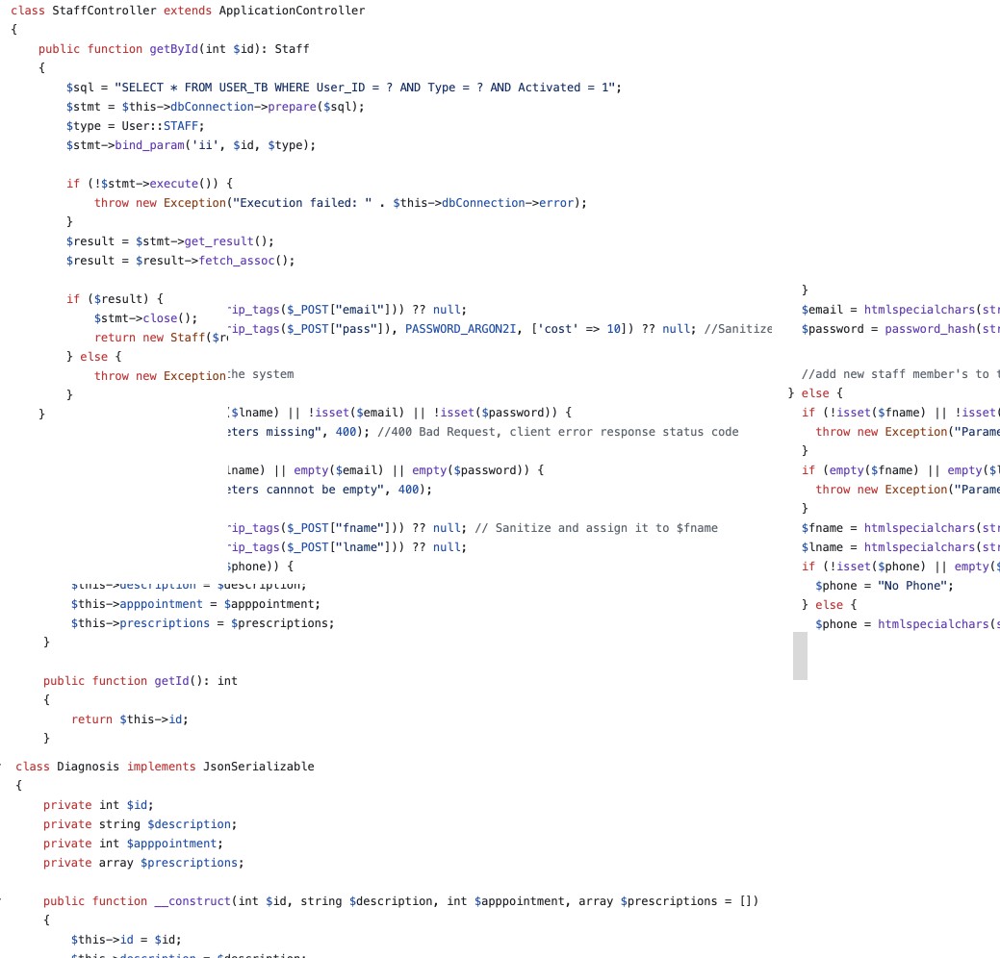

About Me
I'm a detail-oriented tech professional with over 3 years of experience in the telecommunications and automotive industries. From upgrading 250+ routers daily to leading system improvement projects, I've developed a strong eye for optimization and efficiency.
Now, I'm diving deeper into the world of web development — currently working on projects using HTML, CSS, Bootstrap, Tailwind, PHP, Python, and JavaScript. I enjoy building clean, functional websites and always look for innovative ways to solve problems.
I'm excited to bring both my hands-on technical background and growing front-end/back-end skills to new challenges and opportunities.
Background
Medical and Dental Field
I have over 7 years of experience working as both a dental technician and front desk receptionist at a dental clinic, as well as 1 year of experience as a medical receptionist at a general hospital.
Through these roles, I became highly detail-oriented and developed strong accuracy and coordination skills — qualities that are essential not only in healthcare, but in any professional field. In particular, frequent communication with patients was a key part of my daily responsibilities. This experience allowed me to cultivate the ability to accurately read situations and consider things from the other person's perspective. These interpersonal skills have helped me build trust and provide thoughtful, reliable support — assets that I bring to any professional environment.
Network Engineer
Experienced in network operations and project management, I worked closely with cross-functional teams to streamline workflows, implement router configurations, and support vehicle development applications.
Skilled in collaboration and communication, I consistently contributed to improving system performance and ensuring seamless connectivity.
Education
WEB DEVELOPMENT
Tamwood Careers
(Vancouver, Canada)
January 2025 – Current
DENTAL TECHNICIAN
Kyoto College of Dental Hygienists & Technicians
(Kyoto, Japan)
April 2010 - March 2012
Skills


Personal Projects
Frontend : Static Website
As one of my first projects, I built a static website for my mother's dance team, only two months after I began learning HTML and CSS.
The site features common web pages such as Home, About Us, Event Schedule, and Contact.

Backend : PHP (Team PJ)
As one of my first backend projects, I teamed up with two classmates to build a simple medical record management tool, just one month after I started learning PHP and MySQL.
The project was inspired by my background in healthcare, and it helped me understand the basics of object-oriented programming (OOP) and how to apply those concepts in practice.
Experience
NETWORK PROJECT MANAGER
Toyota Systems Corporation
(Nagoya, Japan)
Jun 2023 - Dec 2024
Provided network support for vehicle development, ensuring stable connectivity and quick issue resolution. Collaborated with engineers and IT teams to keep systems running smoothly and projects on schedule.
NETWORK SYSTEM OPERATOR
EXEO Group, Inc.
(Osaka, Japan)
October 2021 - May 2023
Handled daily firmware upgrades for 250+ Cisco routers as part of a team. Improved Excel VBA tools to boost workflow efficiency and built macros to create and apply router configurations.
Certifications
Committed to steady self-study to achieve long-term objectives.
Visit my Credly page!
credly.com